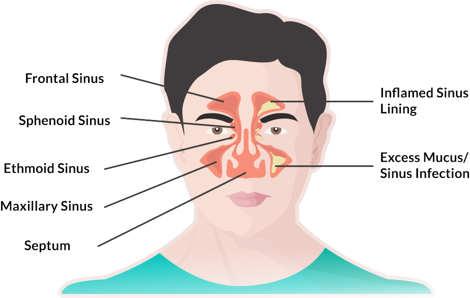

Ballooning Effectiveness
The degree to which balloon dilation improves sinus drainage and function.
Ballooning Force
The amount of force applied by the balloon during dilation.
Balloon-Related Complications
Potential issues or adverse effects associated with balloon sinus
procedures.
Methods used to expand the sinus ostium using a balloon.
Dilator Device
Tool used to expand the sinus ostium, often incorporating a balloon
mechanism.
Endoscopic Guidance
Using an endoscope to visualize and guide sinus balloon procedures.

Balloon-Tipped Catheter
A catheter with a balloon at its tip used for sinus dilation.
Chronic Rhinosinusitis
Long-term inflammation of the nasal passages and sinuses, often treated
with balloons.
Chronic Sinusitis
Long-term inflammation of the sinuses, often requiring surgical
intervention.
Dilation Technique
Endoscopic Visualization
Use of an endoscope to view and guide sinus balloon procedures.
Ethmoid Sinus
Sinus located between the eyes, often involved in sinus balloon dilation.
Ethmoidectomy
Surgical removal of the ethmoid sinus structures, sometimes using
balloons.
Frontal Sinus
Sinus located in the forehead, which can be accessed and treated with
balloon.